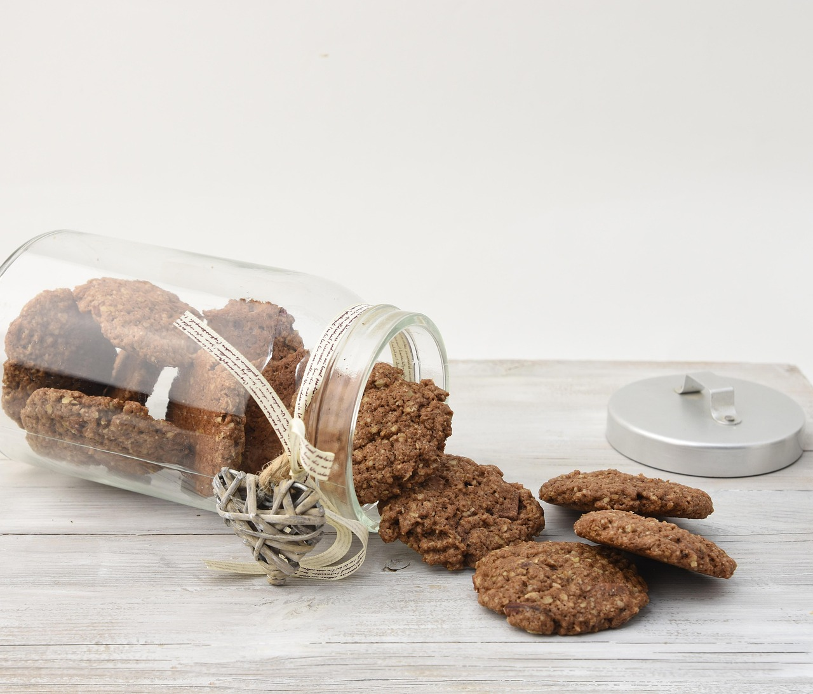

Greek Yogurt Parfait

Ingredients:
- 1 cup Greek yogurt
- ½ cup berries
- Granola
- Honey (optional)
Instructions:
- Layer yogurt in a glass.
- Add berries and granola.
- Drizzle honey and serve.
Banana Oat Cookies

Ingredients:
- 2 ripe bananas
- 1 cup oats
- ¼ cup chocolate chips
Instructions:
- Preheat oven to 350°F.
- Mash bananas and mix with oats.
- Add chocolate chips.
- Bake 12-15 minutes.